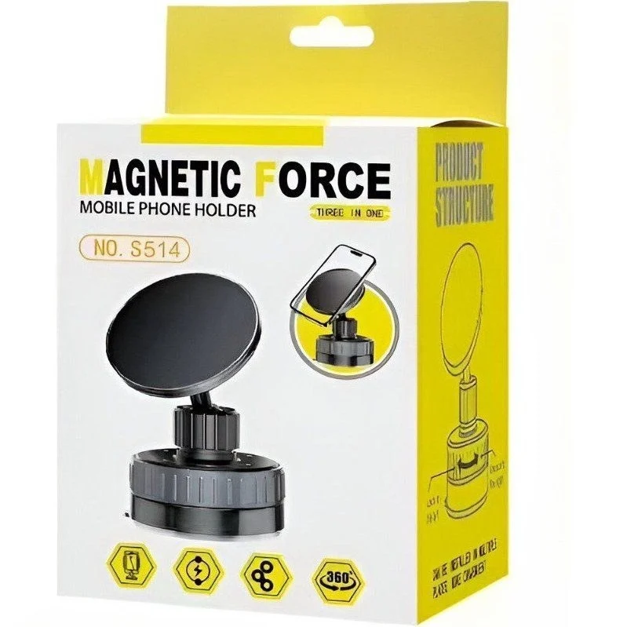

Best Car Accessories in Rawalpindi: Practical Shopping Guide

Looking for the best car accessories in Rawalpindi? This guide helps you navigate the wide range of options available online. The catalog includes items like phone mounts, air pumps, and other practical tools, but not all listings may fit every driver's needs. While the category suggests a variety of automotive products, the samples focus on basic, functional items rather than high-end or specialized gear. This guide highlights key factors to consider when choosing car accessories, such as durability, ease of use, and delivery options. It also explains how to compare prices and features effectively. Whether you're a daily commuter or a weekend driver, this practical shopping guide offers insights to help you make informed decisions.
Quick buying check: Match the actual item to your task, check its measurements or compatibility, and compare the full delivered price. Read the listing and policies before you order. The examples below are catalog evidence, not hands-on test results.
Key benefits of choosing Car Accessories carefully
- Better fit for your task: select the specification or design your situation needs.
- Clearer budget: compare the item, delivery and any required extras together.
- Fewer avoidable returns: resolve missing measurements and compatibility questions before ordering.
- More useful ownership: check how the item will be stored, cleaned and used.
Selection criteria and matching the actual task for Car Accessories
When selecting car accessories in Rawalpindi, focus on how well each item aligns with your specific needs and daily driving habits. Consider practical use cases such as storage, comfort, or safety, and ensure the accessory is suitable for your vehicle type and local driving conditions. Prioritize items that address real problems rather than following trends. For example, a durable phone mount or a weather-resistant cover may be more valuable than a decorative item.
Evaluate the practicality of each accessory by assessing its durability, ease of installation, and long-term usability. Look for features that enhance convenience, such as adjustable mounts, secure fastenings, or weather-resistant materials. Avoid overpaying for unnecessary functions that don’t align with your needs. Compare options based on how well they fit your routine and vehicle setup. Ensure the accessory is reliable and fits within your budget without compromising on essential features. This helps avoid unnecessary expenses and ensures you get the most out of your purchase.
Always verify the compatibility of accessories with your vehicle model and year. Check if the product supports your specific needs, such as phone mounting, cargo organization, or climate control. Confirm that the accessory can be easily maintained and stored. Ensure it aligns with your long-term usage plans. This approach helps avoid mismatches and ensures the right choice for your situation. By focusing on practicality and fit, you can make informed decisions that enhance your driving experience in Rawalpindi.
Fit, dimensions, compatibility or edition checks for Car Accessories
Check the fit and dimensions of car accessories against your vehicle’s specifications. Measure your car’s interior and exterior spaces before purchasing. Verify if the product is designed for your car’s model, year, and make. Some accessories may not fit due to variations in vehicle design. Always refer to the product description for compatibility details. Ensure the accessory’s size matches your needs without causing obstruction or safety issues. For example, seat covers should not interfere with airbag deployment or seat adjustments.
Confirm compatibility with your car’s existing systems. Some accessories may require specific electrical or mechanical integration. Check if the product works with your vehicle’s features like air conditioning, audio system, or dashboard layout. Look for user reviews or manufacturer guidelines on compatibility. Avoid assumptions based on similar products. Ensure the accessory does not interfere with safety systems or vehicle performance. For instance, a dash cam should not block the driver’s view or affect the windshield’s integrity.
Review edition checks for the latest model updates. Some accessories may only work with specific vehicle versions. Check if the product is suitable for your car’s trim level or engine type. Manufacturers sometimes update designs, so confirm the accessory matches your vehicle’s specifications. Look for detailed product descriptions or contact customer support for clarification. Ensure the accessory is compatible with your car’s technology and features. For example, a smart charger may require specific USB ports or power output.
Quality evidence and limitations of listing claims for Car Accessories
Quality evidence for listing claims in this context involves verifying product descriptions against actual items. Look for detailed specifications, user reviews, and clear images. Reliable sources can include official websites or trusted retailers. Cross-checking with multiple platforms helps confirm accuracy. Ensure claims about durability, functionality, and features are supported by real-world data. Avoid relying solely on marketing language. Seek out third-party assessments or expert opinions where available. This builds confidence in the listed information.
Limitations of listing claims often stem from incomplete or outdated data. Some listings may lack essential details like compatibility or usage conditions. This can lead to mismatched purchases. Always check for updates or changes in product availability. Be cautious of vague statements or unverified claims. Some information may not reflect current market conditions or regional specifics. Verify claims through multiple channels before making a decision. This reduces the risk of inaccurate or misleading information.
Practical advice includes focusing on verified details and user experiences. Prioritize listings with clear, consistent information. Compare multiple sources to identify discrepancies. Pay attention to delivery and return policies, as these affect overall value. Avoid assumptions about product performance or fit. Use available resources to gather as much relevant data as possible. This approach helps navigate the limitations of listing claims effectively. Stay informed and make decisions based on reliable, actionable information.
Budget tradeoffs and the full delivered cost for Car Accessories
Budget tradeoffs require careful evaluation of what features are essential versus what are optional. Prioritize items that enhance safety, comfort, or functionality based on daily use. Consider how much you will use each accessory to avoid overspending on rarely used items. Compare prices and features across different sellers to find the best value without compromising on basic quality. Look for accessories that offer long-term benefits rather than short-term convenience.
Full delivered cost includes not just the product price but also shipping, taxes, and any additional fees. These can vary significantly between sellers, so always check the total cost before purchasing. Some sellers may offer free shipping, while others might charge extra for delivery. Factor in the time it takes to receive the item, as delays can affect your plans. Always verify the final cost to avoid unexpected expenses. Be cautious of sellers that list low product prices but add high delivery charges.
Be mindful of hidden costs such as return policies, installation needs, or maintenance requirements. Some accessories may need professional fitting, which adds to the overall expense. Read reviews and check seller reputations to ensure reliability. Avoid making decisions based solely on price. A slightly higher initial cost might save money in the long run through better durability and fewer replacements. Consider the overall value and how well the accessory meets your needs.
Setup, care, storage and useful ownership for Car Accessories
Setup for car accessories in Rawalpindi should begin with verifying compatibility with your vehicle model. Check dimensions and mounting points before installation. Follow manufacturer guidelines for any assembly or configuration. Use a qualified installer for electrical or mechanical components to ensure safety and functionality. Avoid forcing parts that do not fit properly. Always read the user manual thoroughly before starting any setup process. Confirm that all necessary tools and hardware are included. Test functionality after installation to ensure everything works as intended.
Care and maintenance of car accessories depend on the type. Regularly clean surfaces with mild soap and water to prevent buildup. Avoid harsh chemicals that may damage materials. Check for wear and tear, especially on moving parts or electronic components. Keep accessories dry and protected from extreme weather conditions. Store unused items in a cool, dry place to maintain their condition and extend their lifespan. Inspect regularly for loose connections or damaged parts. Address any issues promptly to avoid further damage.
Storage solutions for car accessories should be organized and accessible. Use designated compartments or storage boxes to keep items secure and easy to find. Avoid overloading storage areas to prevent damage. Keep accessories away from direct sunlight and moisture. Proper storage helps maintain functionality and reduces the risk of loss or damage. Always ensure that storage methods do not interfere with vehicle operations or safety. Label storage containers for quick identification. Keep frequently used items within reach.
Common mistakes, arrival inspection and returns for Car Accessories
Common mistakes when buying car accessories in Rawalpindi include overlooking compatibility with your vehicle model. Always verify dimensions and mounting requirements before purchasing. Another error is ignoring the return policy, which can complicate exchanges if the product doesn’t fit. Many buyers also fail to check for additional costs like shipping or installation fees. Ensure the seller provides clear details on these aspects to avoid surprises. It’s also important to read customer reviews and check for any reported issues with the product.
Arrival inspection is crucial to ensure the product matches the description. Check for damage, missing parts, and correct model numbers. Compare the item with the listing to confirm it meets your needs. If anything is wrong, document the issue with photos and contact the seller immediately. This helps in initiating a return or exchange without delays. Always keep the original packaging for safe returns. If the product is damaged during transit, notify the seller and the delivery service as soon as possible.
Returns can be tricky due to varying policies. Understand the return window and conditions before buying. Some sellers may require a receipt or proof of purchase. For online purchases, check if the seller offers free returns or collects shipping costs. If returning via cash on delivery, confirm the process with the seller beforehand. Being clear on these details can save time and hassle later. Some platforms may have strict return rules, so always read the terms carefully.
Future changes and responsible shopping decisions for Car Accessories
Future changes in the car accessories market in Rawalpindi will likely focus on technology integration and eco-friendly options. Shoppers should look for products that support smart features like Bluetooth connectivity or USB-C ports. Stay informed about trends through local automotive forums and social media groups. This helps in making informed decisions as new products emerge. Pay attention to how accessories adapt to evolving vehicle models and user needs. Prioritize items that offer versatility and long-term usability.
Responsible shopping involves considering long-term value over initial cost. Check for warranties and customer reviews to gauge product reliability. Opt for brands that emphasize sustainability and ethical manufacturing. This approach supports better quality and reduces environmental impact. It also ensures that purchases meet real needs rather than fleeting trends. Look for accessories that are easy to maintain and repair, which can extend their lifespan. Supporting local manufacturers or businesses that follow ethical practices can also contribute to a more sustainable market.
Evaluate delivery options and return policies before purchasing. Compare costs beyond the listed price, including shipping and handling. Choose sellers with clear return procedures to handle any issues. This reduces risk and ensures satisfaction. Being thorough in these steps leads to more confident and responsible shopping choices. Check for any additional fees or charges that may affect the total cost. Consider the convenience of payment methods and the reliability of the seller.
A useful buying decision connects your actual task to a clearly described item. A category name, attractive photo or low headline price cannot replace checking what will arrive and whether it fits.
Illustrative Pakistan use cases for Car Accessories
Illustrative: compare a fixed PKR budget
A user with a fixed budget in Rawalpindi might compare the full delivered costs of car accessories by adding the listed price to the delivery fee. For example, a magnetic phone mount priced at PKR 668 with a PKR 250 delivery fee totals PKR 918, which could be more affordable than a higher-priced item with free shipping. This approach helps ensure the total cost fits within their spending limit while still getting necessary items.
Illustrative: check fit for shared home use
A family sharing a vehicle in Rawalpindi may need to check if a foot air pump fits their needs. They might look for a model with a dual valve system and a pressure gauge to handle different types of tyres and inflatables. Ensuring the pump is compatible with their car and other equipment helps avoid returns and ensures the product meets their daily use requirements.
Illustrative: plan delivery and arrival inspection
Someone ordering a car accessory to a smaller town in Rawalpindi should plan for longer delivery times and potential inspection upon arrival. They might choose a product with a clear description and reliable return policy, as they may not have the option to test it before receiving it. Checking the return window and understanding the process helps them make informed decisions when inspecting the item.
Comparison and evidence from actual catalog listings
The following listing snapshot was recorded at 2026-10-29 05:20:16 PKT. These are seller-provided descriptions, not independent performance tests. A category label does not confirm that an item suits every task discussed in this guide. Check the linked item for its current price, availability, measurements and included accessories.
| Listed item | Snapshot price | Listing evidence and limits |
|---|---|---|
| Premium 360° Magnetic Car Phone Mount – Powerful Suction Cup, Foldable Adjustable Dashboard Holder for All Smartphones | Rs 668 | Listing description: Premium 360° Magnetic Car Phone Mount. Features 720° rotation, powerful suction cup for secure mounting, and a foldable adjustable design. Compatible with all smartphones. Ideal for dashboard use. Specifications: 720-degree rotation, magnetic base, sturdy suction. Confirm any unspecified detail with the store. |
| High Pressure Foot Air Pump With Pressure Gauge Golden - Utility Accessory Designed For Inflation And Daily Equipment Maintenance Routine | Rs 1,118 | Listing description: * **High-pressure foot air pump** for fast and efficient inflation * **Dual valve system** for versatile use * **Built-in pressure gauge** for easy pressure monitoring * **Heavy-duty construction** for reliable and long-lasting use * **Wide non-slip base** for better stability while pumping * **Easy Confirm any unspecified detail with the store. |
| Double Cylinder Foot Pump with Pressure Gauge | Rs 1,832 | Listing description: Double-cylinder design for faster and more powerful inflation Built-in pressure gauge for easy pressure monitoring Heavy-duty construction for long-lasting use Easy foot-operated design for effortless pumping Anti-slip foot pedal for better stability Portable and compact for easy storage and carryin Confirm any unspecified detail with the store. |
Delivery and returns: Sasta Milaga currently lists Rs 250 delivery, free above Rs 5,000. Usual estimates are 2-4 working days in major cities and 3-6 elsewhere. Returns can be requested within 7 days; damaged or wrong items return free, while other returns cost Rs 250. Check delivery terms and return terms for current conditions.
Frequently asked questions about Car Accessories in Pakistan
How do I choose Car Accessories for my needs?
To choose car accessories, consider your daily needs and vehicle type. Look for features like durability, compatibility, and ease of use. Focus on products that solve specific problems, such as phone mounting or tire inflation. Prioritize items that enhance safety and convenience.
What should I check in the listing before ordering?
Check the product description for key features and specifications. Verify if the item matches your requirements and is suitable for your vehicle. Look for details on compatibility, materials, and included components. Ensure the listing provides clear information to avoid misunderstandings.
How do I compare the full cost in Pakistan?
Compare prices, delivery fees, and return policies to understand the full cost. Factor in any additional charges beyond the listed price. Check if free delivery is available and what the return process entails. This helps you make an informed decision based on total value.
How much is Sasta Milaga delivery and how long does it take?
Sasta Milaga currently lists Rs 250 delivery, with free delivery on orders above Rs 5,000. Usual estimates are 2-4 working days in major cities and 3-6 working days elsewhere. Read the linked delivery page for current conditions and allow for your specific address.
Can I return a damaged, wrong or unsuitable item?
The published return window is 7 days after delivery. Damaged or wrong items return free, while other returns carry a Rs 250 fee. Read the linked return policy, keep the packaging and report the issue promptly.
Are the product examples independently tested recommendations?
No. The examples are a dated snapshot of seller-provided catalog listings. We have not independently tested these items or verified customer outcomes. Prices and availability can change. Open each product page, compare the stated specifications with your needs and ask the store about missing details.
Conclusion
In Rawalpindi, finding the best car accessories requires attention to quality, functionality, and reliable delivery. The available listings offer a range of options, from phone mounts to air pumps, but no hands-on testing or verified reviews are provided. Practical next steps include checking product descriptions carefully, comparing delivery fees, and considering the return policy. For buyers, focusing on essential items and understanding the catalog's limitations will lead to smarter purchases. Always verify details before finalizing your order. Best car accessories in Rawalpindi can enhance your driving experience when chosen wisely.
Choose with a clear checklist. Browse Car Accessories and compare current listing details. Read how to order before placing a cash-on-delivery order. Take time to confirm the item fits your needs.
Tags: best car accessories in Rawalpindi, car accessories online Pakistan, buy car accessories online, car accessories price in Pakistan, car accessories comparison, car accessories shopping checklist, car accessories cash on delivery, how to choose car accessories for everyday use, what to check before buying car accessories online, compare car accessories with delivery costs in Pakistan, car accessories buying guide for Pakistani families, questions to ask before ordering car accessories with COD
More guides
Umrah travel checklist: documents, packing and planning
A practical Umrah checklist: passport and visa documents, what to pack for Makkah and Madinah, health preparation and booking tips.
Air conditioners (split) size fit compatibility Pakistan: Size, Fit and Compatibility Checklist
Compare Air Conditioners (Split) in Pakistan: listing details, fit and delivered costs. Read product, delivery and return information before ordering.
Academic books size fit compatibility Pakistan: Size, Fit and Compatibility Checklist
Compare Academic Books in Pakistan: listing details, fit and delivered costs. Read product, delivery and return information before ordering.